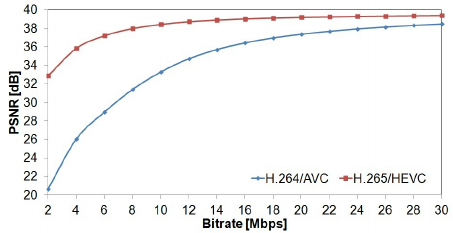
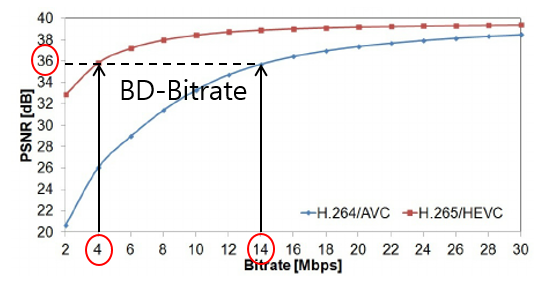
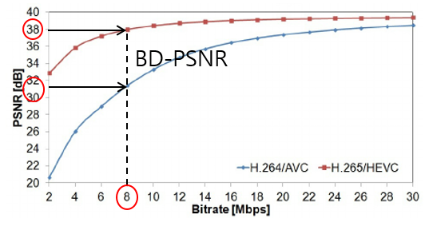

ITU-T 와 MPEG 에서
JVT(Joint Video Team)을 구성하여
함께 제안한
동영상 압축부호화 표준
UN 산하
국제통신연합의 전기통신표준화부문
실시간 통신기술 표준화 진행
H.261, H.262, H.263
ISO 산하
동영상 전문가 집단
멀티미디어 저장기술 표준화 진행
MPEG-1, MPEG-2, MPEG-3/4
H.263대비 1/2 비트율, 동일한 화질의 목표
H.26L (Long term) 프로젝트를 진행
MPEG-4 버전4 완성 이후..
여러 회사에서
더 좋은 부호화 방법들을 제안 받음
ITU-T 또한 H.26L을 제안
MPEG-4 Part2의 ASP 기준 방식 대비
2배 좋은 효율 달성
이밖에...
다음 표준화를 진행할 수 없을 정도로
Video Expert의 그룹 이탈
Microsoft
ITU-T 회장 & MPEG 의장 임명
ITU-T + MPEG
결성
비디오 코덱의 Decoder 부분만 규격 지정
Encoder, Renderer 자유롭게 남겨둠
HD영상 10Mbps 목표
해상도 : SQCIF 에서 4K
컬러 포맷 : 4:2:0
입력 비트열 단위 : 8bit
주사 방식 : Interlace, Progressive
네트워크 친화적
에러 내성
통신계, 저장계 응용시스템 모두 지원
2002년 초 최초 Draft 발표
2003년 초 국제표준 재정
Microsoft
IPR(지적재산원) 선언 의무화
1. 특허가 아니다.
2. 특허가 있다. 허락 X
3. 특허가 있다. 무료다.
4. 특허가 있다. 유료다.
차별없이 합리적이다.(RAND)
4.1다른 멤버가 동의하는 경우, 무료다.
높은 부호화를 위해선 특허 기술 반드시 필요
라이센스 취득 및 관리를 위해 운영 기구 필요
신속한 H.264/AVC 보급
보급에 시간을 소요하게 만드는 운영 기구 불필요
응용시스템에 신속한 보급을 위하여
라이센스 결정권한을 응용시스템 업계로 위임
별도의 라이센스 관리 기관 2군대 설립
MPEG-LA, Via Licensing Pool
1. 참조 소프트웨어(앵커) 제공
2. 앵커를 기반으로 제안 기술 구현
3. 공통 실험 조건에서 테스트
4. RD곡선 분석
H.264/AVC용, JM Software
Encoder, Decoder 탑재
YUV파일 -> 264파일로 변환
결과 보고서 출력
시퀀스들로 구성
| 시퀀스 | 해상도 | 프레임수/초(FPS) |
|---|---|---|
| F1 Car | 720x576 | 25 |
| Bootball | 720x480 | 30 |
| Canoa Valesia | 720x480 | 25 |
Rate-Distortion 곡선

가로: Bitrate, 세로: PSNR-Y
Bitrate 변화에 따른, 화질 손실 정보
X축 방향으로 평가

동일한 PSNR-Y 대비 작은량의 Bitrate값 사용
Y축 방향으로 평가

동일한 Bitrate 대비 좋은 PNSR-Y